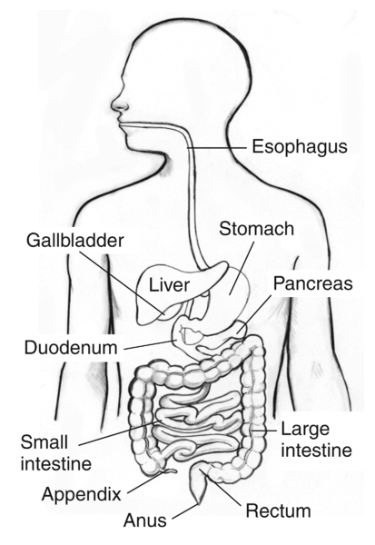

PENCIL SKETCH • 10s DRAWING
✏️

✍️ NIDDK Medical Library Drawing (Media Asset #17996)
Click any label to inspect
SYSTEM 01
Digestive System
🥪 24-hr Journey
📏 30 Feet of Tubing
🥣
The Stomach
Acid Liquefier & Churner
Primary Function:
Churns food with hydrochloric acid (pH 1.5) to liquefy meals into creamy chyme.
Quick Science Fact:
Produces a fresh protective mucus lining every 3 days to avoid digesting itself!